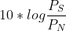
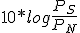

Tasa de señal o tasa de baudios (signaling rate or baud rate)
La tasa de señal de un medio de comunicación es la medida de cuantas veces por segundo cambia la señal física, y se mide en baudios.
Tasa de datos (Data rate)
Representa el número de bits de datos transferidos por segundo. Se mide en bits por segundo (bps).
Ancho de banda (Bandwidth)
Es la máxima frecuencia a la que los cambios de una señal se pueden manejar sin que la atenuación degrade el mensaje (desde el punto de vista del enlace, el ancho de banda de una señal es un concepto algo distinto).
El ancho de banda se miden en Herzios (Hz) que son ciclos por segundo.
Relación señal/ruido (Signal to noise ratio)
S/N
Se suele medir en decibelios de potencia (dB) :

Tasa de transferencia efectiva (Data throughput)
La proporción de datos en un mensaje que no son información real puede ser un factor significativo, por lo que de cara al receptor es más correcto hablar de tasa de transferencia efectiva. Se mide en bps.
Tasa de errores (Error rate)
Relacionada con factores como la relación S/N, el ruido y las interferencias existentes.

10*log \frac{P_{S}}{P_{N}}
10*log \frac{P_{S}}{P_{N}}